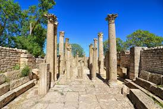
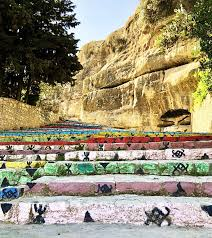
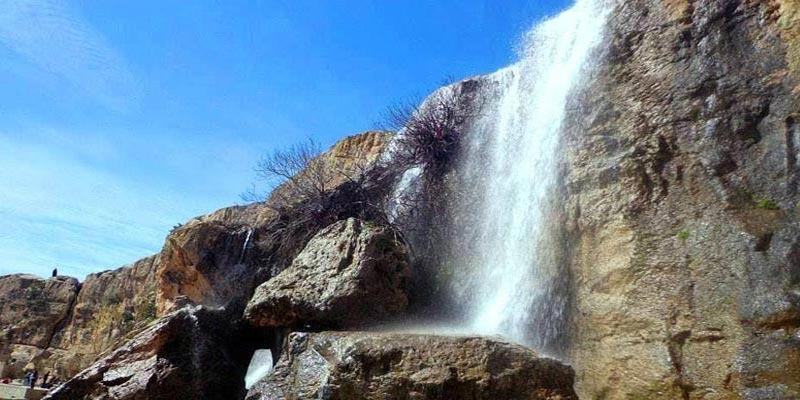
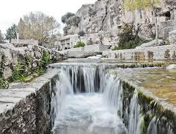

Siliana
Collines et traditions - un coin authentique de la Tunisie intérieure
À propos de Siliana
Siliana est une région intérieure de Tunisie connue pour ses paysages vallonnés, son agriculture et son patrimoine rural. C'est une destination pour les balades en nature et la découverte des traditions locales.
Emplacement
Située à l'ouest du Cap Bon et au sud de Béja, Siliana offre un relief de collines douces, des vergers et des zones agricoles. La région est facile d'accès depuis Tunis pour une excursion d'une journée.
Histoire
Siliana possède une histoire riche liée aux cultures rurales et aux petites agglomérations traditionnelles; on y trouve des traces d'occupations anciennes et un patrimoine architectural local intéressant.
Caractéristiques
- Paysages Ruraux : Collines, oliviers et vergers dominent la région.
- Randonnée : Sentiers et petits sommets pour des promenades en pleine nature.
- Patrimoine Local : Villages traditionnels, artisanat et marchés régionaux.
- Ambiance Authentique : Accueil chaleureux et cuisine locale simple mais savoureuse.
Top Places à Visiter
1. Site Archéologique de Makthar
D'origine numide, ce site exceptionnel est l'un des plus riches de Tunisie. Vous pourrez y découvrir de nombreux monuments bien conservés


2.Kesra
Le plus haut village de Tunisie, situé à 1 100 mètres d'altitude. Il est célèbre pour ses escaliers colorés taillés dans le roc, sa cascade d'eau rafraîchissante, et offre un aperçu de la culture amazighe (berbère).



3. Barrage de Siliana
: Un lieu d'intérêt local offrant un paysage agréable pour une visite rapide.

- L'IMPERIAL BISTRO : établissement mentionné comme un lieu de restauration potentiel à Siliana.
- Pavarotti Pizza : un restaurant local situé à Siliana, dans le nord de la Tunisie, réputé pour ses pizzas artisanales et son ambiance conviviale. Classé parmi les meilleures adresses de la ville, l’établissement attire habitants et visiteurs pour ses plats copieux et son service attentif.
- Dream Coffee lounge : Apprécié pour son ambiance chaleureuse, son excellent café et ses quantités généreuses
- Palm Coffee : Situé au cœur du centre-ville, il offre un décor moderne et chic, idéal pour se détendre ou se retrouver entre amis.